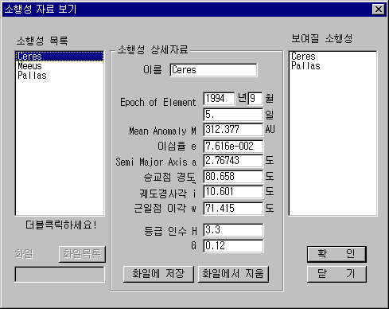

생텍쥐페리의 소설 어린왕자에서 어린 왕자의 고향은 소행성 B612이다. 어린왕자가 자신의 고향을 보며, 그 곳에 두고 온 장미를 생각하는 부분은 참 인상적이다.
무명의 천문학자가 어린왕자의 고향 별을 찾는다는 것도 참 재미 있다. 지금 또 다른 소행성에서 또 다른 어린 왕자가 지구를 향해 떠나올 준비를 하고 있을지 모른다.
소행성을 관찰하며 어린왕자를 찾아보자. 그리고 그들을 따뜻하게 맞을 준비도 함께 해두자.
소행성의 표시
성도에 소행성을 표시하기 위해서는 아래의 순서를 따르면 된다.
[보기][소행성....] 메뉴를 선택한다. 또는 도구바에서 소행성을 클릭한다.
아래와 같은 소행성 윈도가 열릴 것이다.

소행성 자료 보기
왼쪽의 소행성 목록에서 보고자 하는 소행성을 더블 클릭하면 오른쪽의 보여질 소행성 목록에 해당 소행성 이름이 나타난다. 두 개 이상의 소행성을 선택해도 된다.
확인 버튼을 눌러 소행성 윈도를 닫으면 보여질 소행성 목록의 첫 번째 소행성이 성도의 중심으로 온다.
만약 두 개 이상의 소행성을 선택했고, 두 번째 소행성을 보고 싶다면 동서남북바의 왼쪽 아래에 있는 [찾기] 버튼을 누른다.
찾기 윈도가 열리면 맨 위의 레디오 버튼 '태양계 대상'을 클릭한다. 이 때 목록에는 태양, 달, 행성 및 성도에 보여지는 혜성, 소행성, 인공위성의 이름이 나타난다.
목록에서 두 번째 소행성의 이름을 더블 클릭한다.
성도의 중심에 찾는 대상이 보일 것이다. 만약 보이지 않는다면 도구바에서 [태양계], [태양계 이름]이 선택되었는지 확인한다.
새로운 소행성 자료의 입력
소행성 목록에 포함되지 않은 소행성을 보고자 할 때는 다음의 순서를 따른다.
소행성의 궤도요소를 얻는다.
소행성 윈도를 열고, 소행성의 이름을 입력한다. 이름은 소행성 목록에 없는 새로운 것이어야 하며, 만약 같은 이름이 있을 경우 기존의 자료는 지워지고 새로운 자료로 변경된다.
'Epoch of Element'를 연, 월, 일 단위로 입력한다. '시간:분' 단위는 아래의 공식에 따라 '일' 단위로 바뀌어야 한다.
일 = 시간 / 24 + 분 / 1440
기타 궤도요소를 입력한다. 등급 인수는 위치 계산에는 사용되지 않으므로 위치 계산만을 목적으로 할 때는 입력하지 않아도 된다.
저장 버튼을 누르면 현재의 자료가 저장되고, 왼쪽의 소행성 목록에 새로 입력한 소행성 이름이 보일 것이다. 만약 소행성의 이름이 이미 존재하면, 기존의 자료를 바꿀 것인지 묻는 메시지 박스가 열릴 것이다. 여기서 확인 버튼을 누르면 기존의 자료를 바꾼다.
만약 새로 입력한 소행성을 보고자 할 때는 소행성의 목록에서 소행성 이름을 더블 클릭한다.
확인 버튼을 눌러 소행성 윈도를 닫는다. 취소 버튼을 눌러도 소행성의 자료는 저장된다.
소행성 자료의 변경, 삭제
소행성의 궤도요소는 계속해서 보정된 값이 제공되므로 정밀한 계산을 원할 때는 가장 최근의 궤도요소를 입력하여 사용해야 한다. 이미 입력된 자료의 변경은 다음과 같다.
소행성 윈도에서 자료를 변경하고자 하는 소행성을 소행성 목록에서 선택(클릭)한다.
상세 정보란에 선택된 소행성의 정보가 나타난다.
여기서 변경하고자 하는 자료 값을 변경한다. 단 소행성 이름을 변경하는 것은 새로운 소행성 자료를 입력하는 것을 의미한다.
저장 버튼을 누른다. 만약 소행성 이름은 바꾸지 않았다면 기존의 자료를 지우고 새 자료로 바꿀 것인지를 묻는 메시지 박스가 열릴 것이다. 확인 버튼을 누르면 새 자료가 변경되어 저장된다.
만약 현재 있는 소행성을 지울 때는 지울 소행성을 소행성 목록에서 선택하고 '파일에서 지움' 버튼을 클릭하면 된다. 한 번 지워진 자료는 다시 복구할 수 없으므로 지울 때는 신중을 기해야 한다.